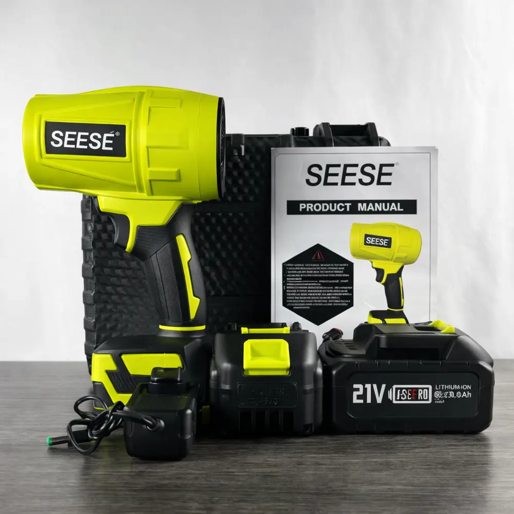
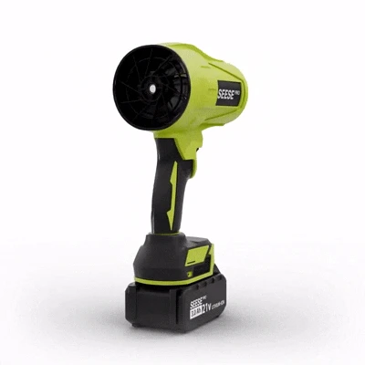
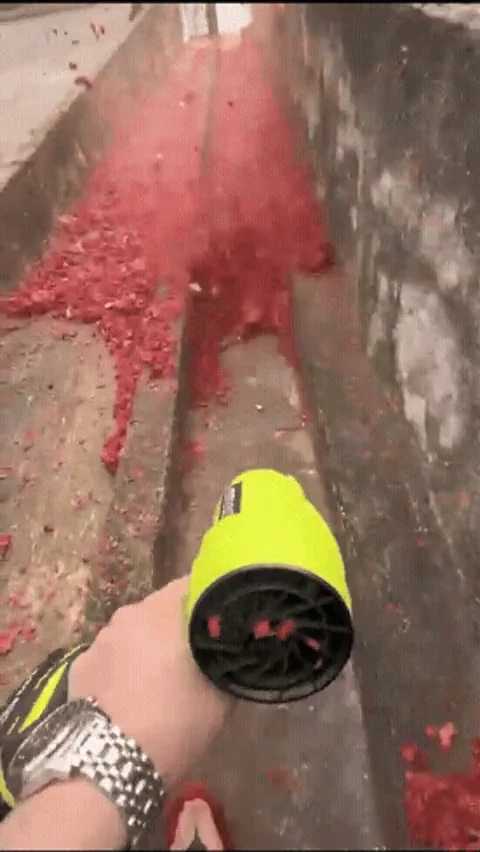
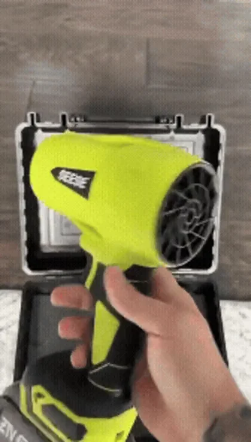

★★★★★
Lucia F.Gostou muito do produto.
JatoMax / Soprador Turbo 2.0

Descrição do produto
O soprador portátil ajuda a deslocar folhas secas e resíduos leves da calçada, do quintal e da entrada da garagem. A bateria fica encaixada na base para você circular sem extensão durante o uso.

Comece junto ao muro e direcione o ar para o chão. Faça passadas no mesmo sentido para reunir as folhas antes de recolher.

Use o jato nos trechos onde as folhas se acumulam, como a base do portão, a borda da calçada e os cantos da garagem. O bocal compacto ajuda a direcionar o ar para uma área menor.

O Turbo 2.0 de 1000G é a versão com motor de cobre robusto. As fotos mostram acessórios da referência. O conteúdo do kit da oferta está a confirmar.
EXPERIÊNCIAS DE COMPRA
Relatos publicados pela Revoria para o anúncio com várias versões do SEESE Pro. Toque nas fotos para ampliar.
★★★★★
Lucia F.Gostou muito do produto.
★★★★★
Maria P.Achou o soprador forte e elogiou a embalagem.
★★★★★
Vanderlei S.Recomendou o produto.
★★★★★
Renata C.Confirmou a entrega e disse que aprovou o soprador.
★★★★★
Rubens D.Destacou a duração da bateria na experiência dele.
★★★★★
Ana M.Disse que recebeu, testou e recomendou o produto.
★★★★★
caio D.Demonstrou satisfação com a compra.
★★★★★
Enzo M.Elogiou o atendimento e a qualidade do produto.
★★★★★
Vanderlei S.Considerou o soprador potente e condizente com o anúncio.
★★★★★
vitor g.Registrou que recebeu o pedido.
★★★★★
Comprador na RevoriaRelatou ter recebido um aparelho de outra marca e perguntou se isso era esperado.